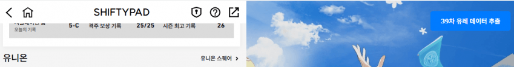
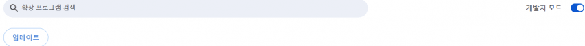
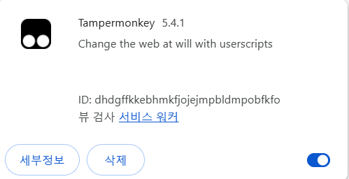
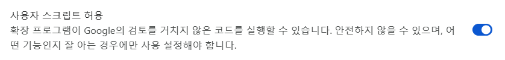
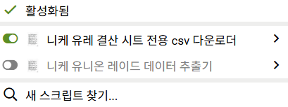
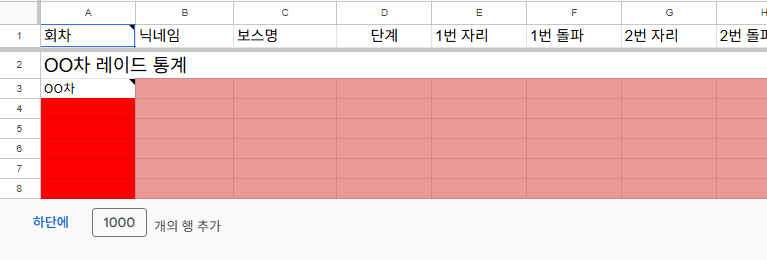

https://gall.dcinside.com/mgallery/board/view/?id=gov&no=5163801
챈펌 유니온 레이드 결산 시트 관련 Q&A입니다.
1. TAMPERMONKEY 어디서 받아요?
https://chromewebstore.google.com/detail/tampermonkey/dhdgffkkebhmkfjojejmpbldmpobfkfo?hl=ko
2. CSV 다운로드 버튼이 안떠요

이 경우엔 여러가지 원인이 있습니다
확장 프로그램 관리 입장

개발자 모드 ON

세부정보 입장

쭉 내리시고 사용자 스크립트 허용
1 표기된 거 확인

활성화 상태인지 체크
3. 유레 다른 회차 어떻게 입력해요?

하단에 행 추가 후 데이터 입력
4. 이거 말고 질문 어디서해요?
https://gall.dcinside.com/mgallery/board/view/?id=gov&no=5163801
여기 댓글 주시면 제가 취합 후 전달